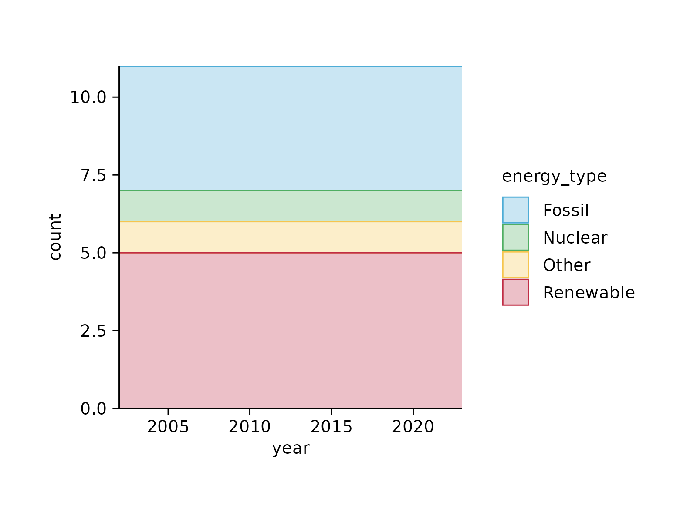
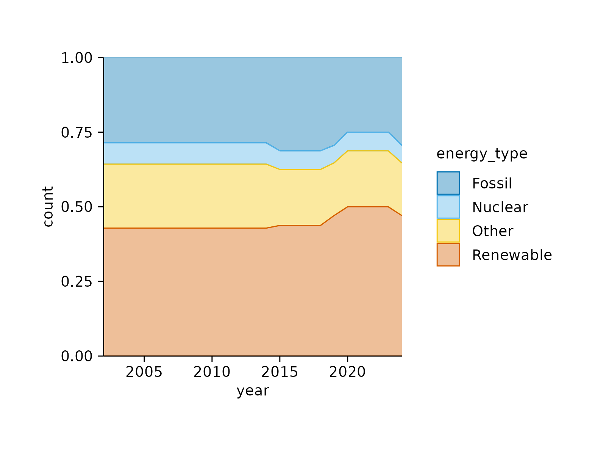
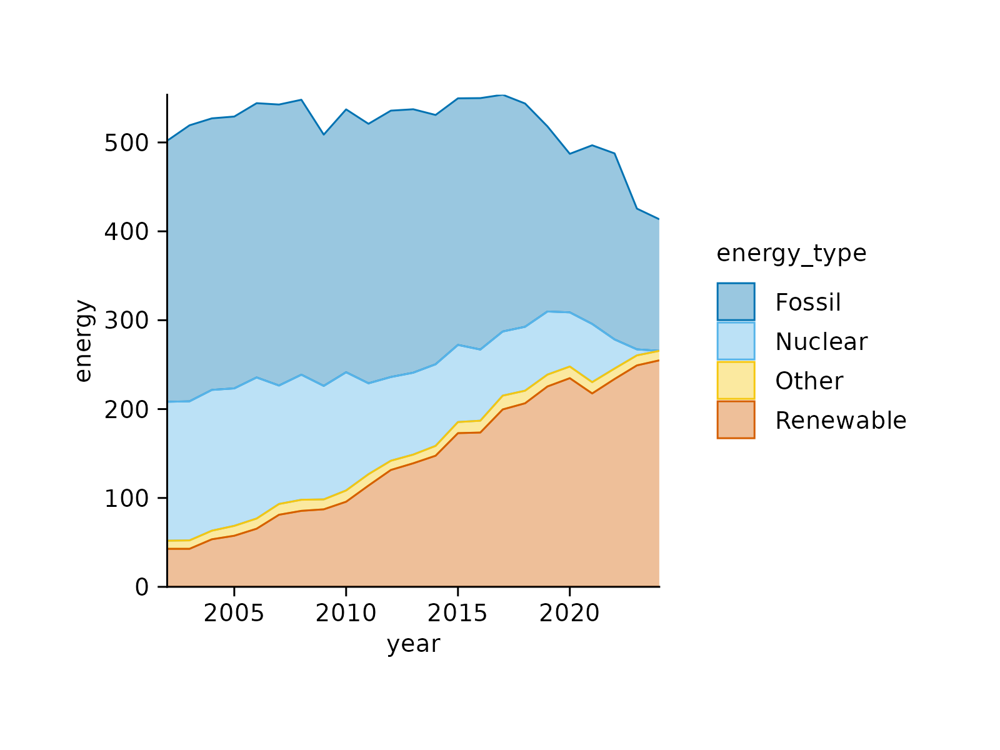
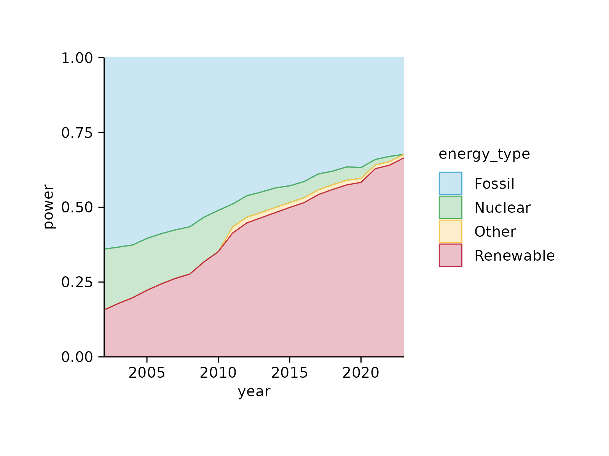
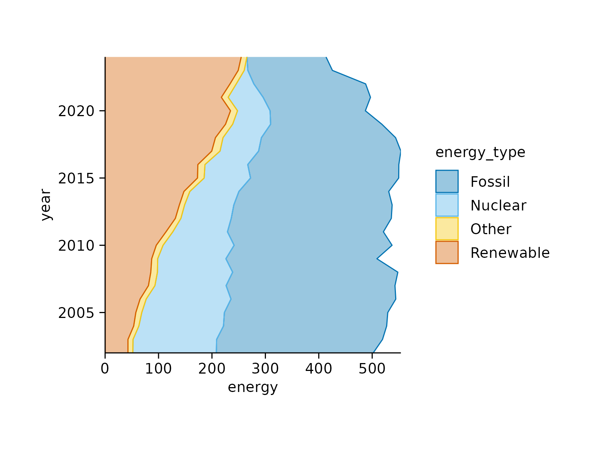
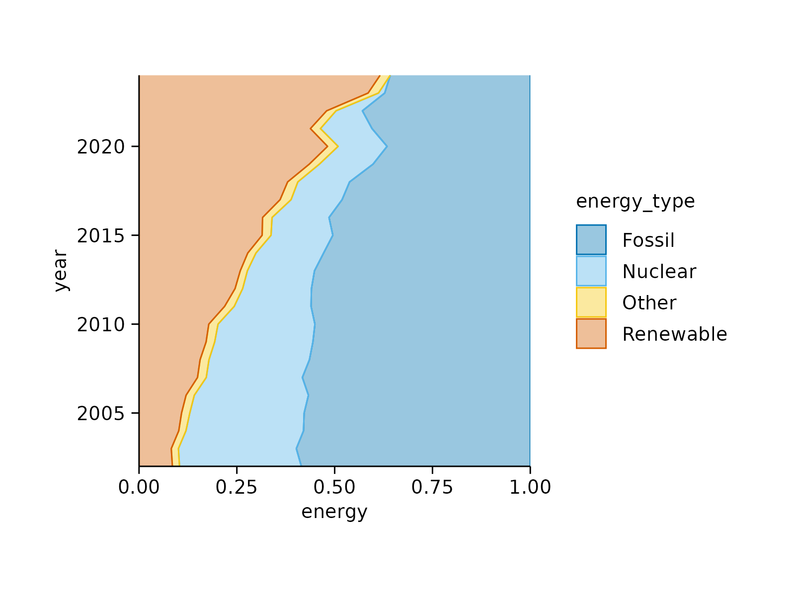

Add area stack
Usage
add_areastack_absolute(
plot,
linewidth = 0.25,
alpha = 0.4,
reverse = FALSE,
replace_na = FALSE,
...
)
add_areastack_relative(
plot,
linewidth = 0.25,
alpha = 0.4,
reverse = FALSE,
replace_na = FALSE,
...
)Arguments
- plot
A
tidyplotgenerated with the functiontidyplot().- linewidth
Thickness of the line in points (pt). Typical values range between
0.25and1.- alpha
A
numberbetween0and1for the opacity of an object. A value of0is completely transparent,1is completely opaque.- reverse
Whether the order should be reversed or not. Defaults to
FALSE, meaning not reversed.- replace_na
Whether to replace
count = NAwithcount = 0.- ...
Arguments passed on to the
geomfunction.
Examples
# for a `count` provide `x` and `color`
# `count` of the data points in each `energy_type` category
energy |>
tidyplot(x = year, color = energy_type) |>
add_areastack_absolute()

energy |>
tidyplot(x = year, color = energy_type) |>
add_areastack_relative()

# for a `sum` provide `x`, `y` and `color`
# `sum` of `energy` in each `energy_type` category
energy |>
tidyplot(x = year, y = energy, color = energy_type) |>
add_areastack_absolute()

energy |>
tidyplot(x = year, y = energy, color = energy_type) |>
add_areastack_relative()

# Flip x and y-axis
energy |>
tidyplot(x = energy, y = year, color = energy_type) |>
add_areastack_absolute(orientation = "y")

energy |>
tidyplot(x = energy, y = year, color = energy_type) |>
add_areastack_relative(orientation = "y")
